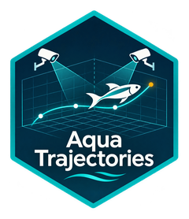

Research evidence, release and validation dashboard
Source:vignettes/articles/research-evidence-dashboard.Rmd
research-evidence-dashboard.RmdScientific evidence and release status
Evidence date: The bundled scientific gate registry is dated 2026-11-12. This page is not a continuously updating live benchmark database. Check linked GitHub Actions and release records for any newer verification.
Live engineering workflow links
The badge destinations below take you to actual GitHub Actions history, which may include successful, failed, skipped, queued, or rerun jobs. A successful automated check is software evidence, not independent underwater accuracy.
- R qualification
- Research documentation website
- Full engineering and scientific-safeguard gate
- Source version and release history
- Open scientific issues
- CRAN candidate source review PR #79 — separate v0.1.2 candidate, not the published v0.1.1 tag.
Independent empirical gates
The public registry records scientific_certified = false for each of these nine milestone areas. Software tests, real-format probes, and mathematical demonstrations remain useful but do not supply the absent external reference evidence.
| Milestone | Source registry engineering state | Remaining evidence needed |
|---|---|---|
| Fish detection | Real-source qualified | Independently reviewed held-out boxes across tanks/species |
| Fish identity | Real-source qualified | Held-out identity labels and official tracking association metrics |
| Multi-camera exposure | Software contracts passed | Measured cross-camera physical exposure pulses |
| Physical underwater XYZ | Software contracts passed | Independent surveyed target positions and error curves |
| Joint uncertainty | Software contracts passed | Empirically measured error components and held-out coverage |
| Behaviour and tank inference | Software contracts passed | External biological labels and independent tank replication |
| Unified researcher explorer | Software contracts passed | Real multiview review and independent usability/evidence evaluation |
| Physical ACI | Simulation-only | Ethics-approved device tests, hard stop, actual fish response |
| Independent science release | Software contracts passed | External replication, biological metrology, rights and scientific review |
Do not convert these gates to passes based on synthetic tests. New validated evidence should be incorporated only after checking its provenance and scope.
Evidence to include in a research paper
Use the published package tag/DOI; identify exact versions; record original video and reference-label hashes; document camera calibration and timing; separate training from holdouts; report real detection/tracking metrics; use independent tanks where appropriate; and distinguish unconditional coverage claims from scenario-based sensitivity. The capabilities matrix and scientific-status statement are the authoritative navigation entry points.
For publication citations, download BibTeX or use the Zenodo record.